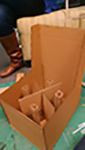
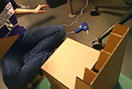
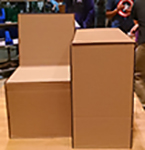
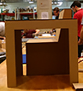

Design Class Projects
Design, Thinking & Doing: NU Day app |
Industrial Design Projects: LRSeat |
NU Day - created with POP. Click on the photo to test out the paper prototype in POP.For this project, our questions was "How might we engage Northwestern students in contributing to a positive community?" and one solution we came up with an app called NU Day. NU Day is similar to a current app called Yik Yak, although NU Day requires students to log in with their Northwestern ID so that their posts are not anonymous. The idea is that students will post positive challenges, ideas, and other random things (there's a list of suggested themes within the app) that will encourage other students to part-take in these positive activities, or at least get students thinking about them. |

    For the last half of the quarter, we were put in pairs and given a task: find a space at Northwestern with public seating, and redesign it. With corrugated cardboard. We picked a space in Tech (see video below to see the space) where the seating - a few couches - is never maximized because students are often unwilling to sit with strangers and end up taking over the space. We also found that the space was not ideal for students who were trying to study, do work, or eat there between classes. We decided to create a modular chair and table piece that could be placed every-other, ensuring that a student could not spread out and take over multiple spaces, and also giving them space on a table to put their items, instead of on the seat next to them. |
|
(LRSeat video created using photoshop) |